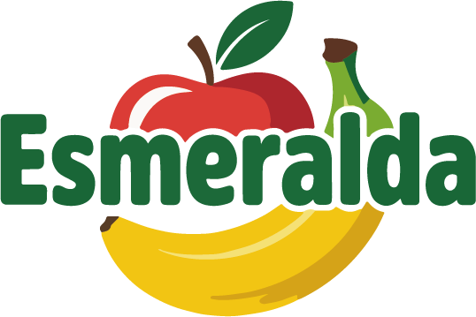

Bienvenidos a Tienda Esmeralda
En Tienda Esmeralda encontrarás frutas y verduras frescas, cultivadas con amor y respeto por la naturaleza. Te ofrecemos una experiencia de compra cómoda y confiable, con productos orgánicos de alta calidad. 🥇 Productos Destacados
🍎 Frutas Frescas
Disfruta de nuestras frutas seleccionadas, ideales para cualquier momento del día.
🥦 Verduras Nutritivas
Encuentra verduras frescas y llenas de nutrientes para tu dieta diaria.
🌱 Nuevos Ingresos
🍎 Nuevas Frutas
Descubre nuestras últimas incorporaciones al catálogo de frutas.
🥦 Nuevas Verduras
Explora nuestras nuevas opciones de verduras frescas.